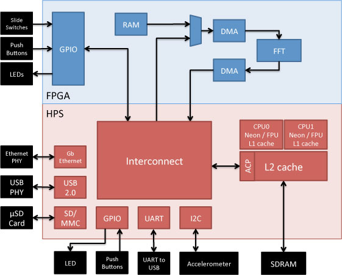

Welcome to the Atlas-SoC Software Evaluation Kit!
This kit is based on the Terasic DE0-Nano-SoC board, developed for the Altera University program. The board hardware is the same, but the embedded software and reference designs are different. If you plan to use this board in a classroom environment please click here. If, however, you wish to evaluate the Altera SoC software design tools and flow, read on.
Here are some things you can do with this kit:
Try it for yourself. Get hands-on experience developing embedded software using the Atlas-SoC board as your development system.
Take the next step. Download and install the development tools (hardware and software) on your PC or workstation. Learn about daughter cards, open source projects, and additional technical information available specifically for this board.
Before You Begin . . .
Why Use An SoC FPGA
Not sure why you might use an SoC FPGA?
Here are some resources that may help answer that question and, along the way, show you why this type of device may be just the answer for your next design:
Videos:
EE Journal Chalktalk Tech Briefs With Amanda Dalton:
A Look Inside SoC FPGAs Featuring Jim Turley From Silicon Insider:
- Part 1: Introduction - 8:46
- Part 2: System Performance - 10:31
- Part 3: Reliability & Flexibility - 8:20
- Part 4: System Cost, Power, & Roadmap - 9:38
- Part 5: Embedded Software - 11:29
White Papers:
Get Familiar With The Board
Learn About The LEDs and Switch Settings
See What's Running On The SoC Device
Embedded Software
- OS: Linux (Angstrom) version x.y
- Web server: lighthttpd
- VNC server: ????
FPGA Hardware
- 32-bit FFT
- DMA x2
- 4k SRAM buffer
- GPIO x8 (LEDs)
See What's Loaded On The SD Card
Software
- OS:
- Linux OS
- Tools:
- SoC development tool chain for Linux
- Editors (vi, Cloud9 IDE)
- Debugger: (ARM DS-5 community edition)
- Software example designs
- LED
- POV demo
- FFT
- Documentation
- Board User Guide
- Board Schematic
- Videos
Hardware
- SoC configuration file
- FPGA programming file
- Hard Processor System (HPS) I/O configuration
Directory map goes here
- OS:
Access Documentation & Technical Support
Documentation
The Atlas-SoC kit uses the same board as an Altera University kit (DE0-Nana-SoC). The document links below are for the DE0-Nana-SoC (same design).
Support
- AtlasSoC Mailing List